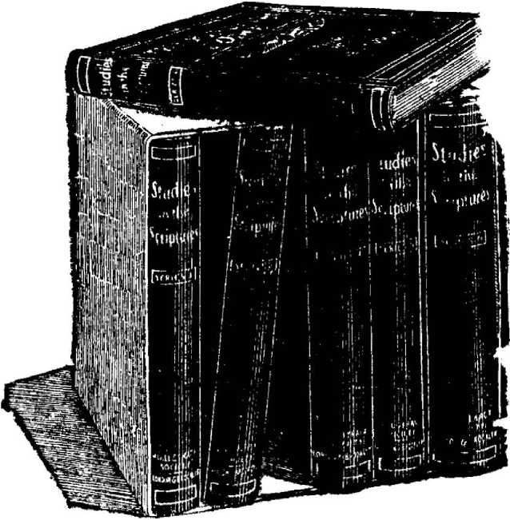

"'•■ • "$
WATCH TOWER p^'LE & TRACT s SOCIETY
310 Martin Bldg., Federal St. PITTSBURGH
PA.
No. 16
THE question of the ages is, Why did the Almighty, originally, permit evil—sin? •And why has an omnipotent Ruler, such as he, for tnore than sixty centuries permitted Satan to continue his reign of sin and death? Leaving out entirely the unscriptural theory so prevalent, respecting a purgatory of centuries, or a torment everlasting, and considering merely the trials, suffering, sorrow and pain of humanity during the present life, how shall we account for their permission by an all-powerful Creator, who knew the end from the beginning?
Why does God permit injustice, unrighteousness, headaches, heartaches, etc.? Why ^does he not deal with humanity graciously, kindly, lovingly, as a Father—as he deals with the angelic sons of God? Is it just or loving on the part of our Creator to bring forth millions of his creatures under these admittedly unfavorable conditions, beset by weaknesses and sinwardness from their birth and surrounded by others, similarly weak, and beset by Satan and his minions—wicked spirits? Is it just that vve should thus be in an unequal fight subjected to weaknesses and dying and imperfect conditions on account of the sin of our first parents and then, on the same account, be in danger of an' eternity of torture, with nine hundred and ninety-nine chances out of a thousand against us?
Our question is surely too deep for any human philosophy, and those who reject the Bible as of divine inspiration may as \veil abandon all hope of an answer. . God himself, and none other, could t-ell us o£ his own secrets—why he did as he did. Truly we read, "The secret of the Lord it with them. that rever€nce him; and he will
show them his covenant."—Psaltn 25:14; I I'9 :1O5.
-The light now shining upon the Word of God shows us that the divine purpose in connection with mankind is a progressive one, embracing ages and dispensations. If we ignore these, we are thereby blinded to the true answer to our question. Accepting these, it is the privilege of Bible students today to see the light in God's Word—to see matters from the divine standpoint, to understand the "mystery of God, hidden from ages and from generations, and no\v made known unto his saints"; namely, that in the ages to come all the trials and difficulties, all the sorrows and tears of the past, will be more than compensated for, and proved to be a part of the great divine program which will work out to the glory of God and the enlightenment and blessing of angels and men.
Man's Primary Lesson
First of all, God chooses to have children possessed of a quality like his own—freedom of will. He therefore not only created man perfect in tnind and body, but gave to him a will, the power of choice—liberty to choose one course or another. God foresaw that giving man this liberty of will would lead to the seduction of mother Eve, and to the disobedience of father Adam, through his love for his wife. Adam's preference was to die with her rather than to live in harmony with God without her; for if he should disobey he would come under the sentence of death. Although Adatn and the angels were perfect, they had not a perfect knowledge of their Creator, of his love, wisdom, justice, power.
God, therefore, without interfering with Adam's liberty, permitted the great penalty of death to come upon him and his race. From the very beginning God premeditated the entire plan of salvation as he has since been working it out ; and he will- completely accomplish the same ultimately, through Messiah's kingdom. The great lesson which will eventuallv come both to angels and men will show forth divine wisdom, justice, love and power, fully co-ordinated. In no other \vay that we can imagine could this great revela -tion of the divine character be so well made. However, in order to comprehend this great program, it is necessary that we follow strictly the Scriptural teachings, and avoid wholly the nonsense of our creeds,- manufactured during the dark ages. \Ve must see that ''the wages of sin" is not eternal torment, nor purgatory, but death.
God permitted this reign of sin and death from Adani until Moses without so much as making an offer of terms of reconciliation and peace. tfhen an offer was made to the nation of Israel, but to no other nation. The offer of Israel's Law Covenant was: "He that doeth these things shall live." God, of course, knew that Israel could not keep perfectly the conditions of that great and wonderful law. The offer served as a lesson to that nation respecting the impossibility of any man's keeping the perfect law; and the same lesson cotnes to us of this Gospel dispensation. We see that what the Jew could not do we cannot do; where he failed we would fail.
The Great Lesson of the Law
Thus through the Law Covenant God taught a great lesson to Israel and to the church; and he will ultiniately teach the same lesson to the world and to angels—proving that by the deeds of the law no fallen flesh could be recovered and reinstated in divine favor. Four thousand years passed from man's creation, and death reigned from Moses to Christ as thoroughly as it had previously reigned from Adam to Moses. The Law Covenant did not stop the reign of sin and death. Something more than a law is necessary. 'rhe divine program demands recovery from sin and death, and it purposes this recovery.
Nearly nineteen centuries have passed since the first advent of our Lord, and still the reign of sin and death is in progress more than ever. The increase of knowledge has brought increase of sin ; increase of population has brought increase of death; until today the world is in a terrible
WHY GOD PERMITS EVIL 5 condition of mental, moral and physical dilapidation, and ninety thousand go into the tomb every twenty-four hours.
But a remedy is in sight. It was foretold through the prophets, but it began to operate in Jesus. His miraculous birth, his faithfulness and consecration unto death, his reward of resurrection and exaltation to the right hand of the Majesty on high, are all essential to man's recovery—essential to the overthrow of this reign of sin and death over our race.
\Ve see still further developments and preparations. 'fhe Scriptures inform us that it is the divine purpose to have a multitudinous Messiah, of which the glorious Jesus is the Head and the church the body.
\Ve perceive that for nearly nineteen centuries God has been calling and drawing a special class of mankind to constitute his elect, the bride class, to be joint-heirs with his Son in the kingdom of glory which will finally vanquish sin and Satan and deliver the willing and obedient of mankind into the full liberty of the children of God— freedom from sin and death, and into the enjoyment of life everlasting and divine favor.
This special class is required to walk by faith and not by sight—to walk in the "narrow way" of self-denial and opposition to the world, the flesh and the adversary, in the footsteps of Jesus. Ignorance, selfishness, sin, death, ;:?» go to make up the deplorable conditions in the world and to constitute the way a narrow one in which this elect class is required to walk, in order to demonstrate their full loyalty and obedience to the will of God—even unto death. Evidently, no such narrow way could have existed had God not permitted evil—sin. Evidently, therefore, this elect clas! could not be developed and tested except by the divine permission of sin. The very essence of their character-development is associated with the divine promise that "all things shall work together for good to those who love God, to the called ones according to his purpose.’’
It seemed wise to our heavenly Father that our Lord ]esus should learn obedience through sufferings and be tested in respect to his willingness to endure suffering for righteousness' sake. _ How appropriate it is that the same Father should make similar arrangements for all of the church, whom he will receive from amongst the race of Adam to be members of the royal priesthood under Iesus, the High Priest of our order !
We see a necessity for this, not only as respects our own testings and a thorough proof of our own heart-loyalty to the Lord, but additionally we see a wisdom on God's part in thus preparing a priesthood of the future. A priest, as recognized amongst the Jews, \vas not merely one who offered sacrifices, although every priest was of necessity a sacrificer. The special mission of the priestly tribe . amongst the other tribes was that of instructing, helping, healing, teaching. And so God is preparing a royal priesthood for the Messianic age to bless, to heal, to teach, to uplift all the willing and obedient.
Sin's Lesson to Humanity
The royalty of the priesthood signifies that it will no longer be a sacrificing class, for all sacrificing will be at an end. It will be a glorious class, royal, of the divine nature, and representatives with our Lord Jcsus of the divine power. As priests who will have to do with judging and chastening, healing and helping humanity, how much sympathy do we suppose that these royal priests should have? Are they not to be on the divine plane oi glory, "members of the body" of Messiah? _
Humanity is learning a great lesson through the permission of sin. Present experiences teach the lesson that "the way of the transgressor is hard;" "the wages of sin is death;" "the soul that sin-neth it shall die." The exceeding sinfulness of sin is thus being demonstrated to humanity. Few profit by the lesson in the present life, and these are chiefly such as are called to the heavenly calling. The great majority of mankind learn to
know sin, evil, only. Even God's provision for the future of mankind is obscured from the masses. "The god of this world hath blinded the minds of them that believe not, lest the light of the glorious Gospel of God's goodness should shine into their hearts."—2 Cor. 4 :4
But with the dawning of the new dispensation of Messiah's kingdom, the true light of the knowledge of the glory of God's character will shine everywhere. "All the blind eyes shall be opened and all the deaf ears shall be unstopped." Messiah's gracious reign, the manifestation of divine tnercy, will be for the very purpose of uplifting •these poor, fallen members of our race— the masses. During the thousand years of Messiah's kingdom, the whole world will have full opportunity for learning the great desirability of righteousness, as now, for a few years, they have the opportunity of learning the undesirability of sin.
The Lesson to the Angels
By the close of the Mediatorial reign what wonderful lessons respecting good and evil mankind ‘vill have learned! Then will conie their final testing. After full knowledge of both good and evil, which will they choose? God urges all to choose the right and its reward of Efe eternal. Nevertheless, he will not coerce; he \vill permit each individual to take his choice, to niark out his own course, whether in harmony with or contrary to the divine arrangements. • Such, however, as cotne to the point of loving righteousness and hating iniquity, shall be accounted worthy of a place in the glorious kingdom of Messiah.
God's dealings •with humanity constitute a great object lesson to the angels. They perceive the inflexibility of divine justice. The decree of God, "Dying thou shalt die," has been unflinchingly executed against Adam and his race for six thousand years. They perceive, further, the love of God, which passeth nlt understanding. They perceive the divine provision that the Son of God ih^uld die, the just tot th€ \l!\fust* te nrrntf
mankind back to full harmony with the Creator. They see the breadth of the divine character exemplified in the great reward given to our Lord ]esus Christ for his obedic nce to the Father's \vill, even unto death—an exaltation to the divine nature, honor and immortality.
They perceive, too, a still greater manifestation of divine goodness, in God's invitation to the church to become joint-heirs with Christ in his glory, honor and immortality, on conditions of obedience and walking in the Master's footsteps to the extent of their ability. Who could have dreamed of such "love divine, all love excelling," \vhich stooped down, not only to redeem the race, but also to invite some of the members thereof to these exceeding great and precious things which "God hath in reservation for them that love him!"
Divine Power and Wisdom
Next in order the world will receive divine niercy, extended through Jesus, by the Father's arrangement, to. Adam and every member of his race, no matter how degraded, no matter how fallen, no matter ho\v mean. The redeetning blood has been shed, "the just for the unjust," for the sins of the whole world.
While divine power is manifested in all the realm of nature and creation, a still greater divine power was manifested in the resurrection of oqr Lord Jesus from the dead, after he had been deceased three days. But even the power manifested in our Lord's resurrection seems small in cotnparison to the further works of •resurrection which the Scriptures assure us our dear Lord's death insures. It will be a still more miraculous work to resurrect the church to glory, honor and immortality, after many of them have been in the power of death for centuries.
And still more stupendous is the resurrection work which God proposes •for the world of mankind:—thousands of tnillions to be^ awakened and restored to the same conditions they ■ formerly enjoyed—conditionsi however of imperfection,
'from which they will be gradually released and uplifted by Messiah.
This resurrection work for the world, which will be gradually carried forward during that thousand years, will all be accomplished by the Father's power, through the Messiah, the Mediator of the New Covenant. It will be a continuous miracle of awakening and uplifting the^ race.
Divine Wisdom Vet to Be Seen —
Not until the close of the reign of MessHth and the complete uplift f rotn sin and death of all of Adam's race willing to return to divine favor, will the wisdom of God be manifested in its full, clear light. Already some may see, partially, obscurely, some of God's wisdom, but the tna-jority are still inquiring, Why was evil permitted? These have not yet seen the divine wisdom in connection with the permission of evil. Ultimately this shall be clearly seen—by the saints, by the angels and by the world of mankind. Well - docs the Revelator exclaim :
"Who shall not glorify thee, 0 Lord. •when thy righteous dealings are made manifest!” "All nations which thou hast tnadc shall come and worship bef ore thee!" (Revelation IS :4) As now, "day unto day uttereth speech and night unto night showeth knowledge, and there is no place where their voice is not heard’’—the voice of Nature, acclaiming her God—so eventually, every creature in heaven and earth and under the earth shall be heard saying, "Praise, glory, honor, dominion and might be unto him that sit-teth upon the throne, and unto the Lamb, forever." All this will be the result of God's permission of sin—of his permission of the reign of evil, sin, death. The key is found in the Plan of the Ages—showing the work which each age is tc accomplish, and the grand overthrow, eventually, of evil.
But what advantage is there in the method pursued? Why not give all men an individual chance for life now, at once, without the long process of
Adam's trial and condemnation, the share by his offspring in his condemnation, the redemption of all by Christ's sacrifice, and the new offer to all of everlasting life upon the New Covenant con-■ ditions? If evil must be permitted because of man's free moral agency, \vhy is its extermination accomplished by such a peculiar and circuitous method? Why allow so much misery to intervene, and to come upon many who will ultimately receive the gift of life as obedient children of God?
Advantages of the Divine Method
Ah! that is the point on which interest in this subject centers. Had God .ordered differently the propagation of our species, so that children would not partake of the results of parental sins—weaknesses, mental, moral and physical—and had the Creator so arranged that all should have a favorable Edenic condition for their testing, and that transgressors only should be condemned and "cut off," h'bw many might \vc presume would, under all those favorable conditions, be found worthy and how many unworthy of life?
If the one instance of Adam be taken as a criterion (and he certainly was in every respect a sample of perfect manhood), the conclusion woulJ be that none would have been found perfectly obedient and worthy; because none would possess that clear knowledge of and experience with God which would develop in them full confidence in his laws, beyond their personal judgment. We are assured that it was Christ's knowledge of the Father that enabled him to trust and obey implicitly. (Isa. 53 :1 i) But let us suppose that one-fourth would gain life; or even more, suppose that one-half were found worthy, and that the other half would suffer the wages of sin—-death. Then what? L-et us suppose the other half, the obedient, had neither experienced nor wit -nessed sin ; might they -not forever feel a curiosity toward things forbidden, only restrained through fear of God and of the penalty? Theit service could not be so hearty as though they .k$*w gee4 ««4 eviL anc;l .hence had a full appre*
VVHY GOD PERMITS EVIL 11 ctatlon of the benevolent designs of the Creator in making the laws which govern his o\vn course as ‘"•ell as the course of his creatures.
Then, too, consider the half that would thus go into death as the result of their ovvn wilful sin. tfhey would be lastingly cut off from life, and their only hope would be that God would in love retnetnber them as his creatures, the work of his hands, and provide another trial for them. But why do so? The only reason would be a hope that if they were re-awakened and tried again sotne of them, by reason of their larger experience, tnight then choose obedience and live. But even if such a plan were as good in its. results as the one Gocl has adopted, there would be serious objections to it.
How much more like the wisdom of God to confine sin to certain limits, as his plan does! How much better even our finite minds can discern it to be, to Have but one perfect and impartial law, which declares the wages of wilful sin to be death—destruction—cutting off from life! God thus limits the evil which he permits by providing that the Millennial reign of Christ shall accomplish the full extinction of evil and also of wi1 ful evil-doers, and usher in an eternity of righteousness, based upon full knowledge and perfect freewill obedience by perfect beings.
God's Plan the Best PJan
But there arc tvvo other objections to the plan suggested, of trying each individual separately at first. One Redeemer \vas quite sufficient in the plan which- God adopted, because only one had sinned, and only one had been condemned. ( Others shared his condemnation.) But if the first trial had been an individual trial, and if one-half of the race had sinned and been individually condemned, it would have required the sacrifice of a redeemer for each condemned individual. One unforfeited life could redeem one forfeited life, bnt no tnore. The one perfect man, "the man Christ Jesus." \vho redeems the fallen Adam (and our losses through him), could not have been "a
ransom [a corrsponding price] for all" under any other circumstances than those of the plan \vhich God chose.
If we should suppose the total number of human beings since Adam to be one hundred billions, and that only one-half of these had sinned, it would require all of the fifty billions of obedient, perfect men to die in order to give a ransont (a corresponding price) for all the fifty billions of transgressors; and so by this plan also death would pass upon all. And such a plan would involve 110 less suffering than is at present experienced.
The other ohj ection to such a plan is that it would seriously disarrange God's plans relative to the selection and exaltation to the divine nature of a "little flock," the body of Christ, a company of which Jesus is the Head and Lord. God could not justly command the fifty billions of obedient sons to giYe their rights, privileges and lives as ransoms for sinners; for under his own law their obedience would have won the right to lasting life.
Hence, if those perfect men were asked to become ransomers of the fallen ones. it would be God's plan, as with our Lord Jesus, to set sotne special reward before them, so that they, for the joy set before them, might endure the penalty of their brethren. And if" the same reward should be given them that \vas given to our Lord Jesus, namely, to partake of a new nature, the divine, and tb be highly exalted above angels and principalities and powers, and every natne that is named—next to Jehovah (Eph. 1:20, 21), then there would be an immense number on the divine plane, which the. wisdom of God evidently did not approve.
Furthermore, these fifty billions, under such circumstances, would all be on an equality, and none among them chief or head, while the plan God has adopted calls for but one Redeetner, one highly exalted to the divine^ nature, and then a “little flock" of those whom he redeemed and who "walk in his footsteps" of suffering and self-denial, to share hi snatne, his honor, his glory and his nature, even as the wife shares with the husband.
Ransom and Restitution by One Redeemer
Those who can appreciate this feature of God's plan, which, by condemning all in one representative, opened the way for the ransom and restitution of all by one •Redeemer, will find in it the solution of many perplexities. They will see that the condemnation of all in one was the reverse of an injury; it \vas a great favor to all when taken in connection with God's plan for providing justification for all through another one's sacrifice. Evil will be forever extinguished when God's purpose in permitting it shall have been accomplished, and when the benefits of the ransom are made co-extensive with the penalty of sin. It is impossible, however, to appreciate rightly this feature of the plan of God without a full recognition of the sinfulness of sin, the nature of its penalty—death— the importance and value of the ransom which our Lord Jesus gave, and the positive and complete restoration of the individual to favorable conditions—conditions under which he \viii have full and ample trial, before being adjudged worthy of the reward (lasting life), or of the penalty (lasting death).
In view of the great plan of redemption, and the consequent "restitution of all things" through Christ, we can see that blessings result through the permission of evil which, probably, could not otherwise have been so fully realized.
Not only are men benefited to all eternity by the experience gained, and angels by their observation of man's experiences, but all are further advantaged by a fuller acquaintance with God's chaarcter as manifested in his plan.
When his plan is fully accomplished all will be able to read clearly his wisdom, justice, love and power. They will see the justice which could not violate the divine decree, nor save the justly condemned race without a full cancellation of their penalty by a willing Redeemer. TheY \vill see the love which provided this noble sacrifice and which highly exalted the Redeemer to . Gody's own right hand, giivng him power and authority thereby to restore to life those whom he had purchased with his precious blood. They will also see the power and wisdom which were able to work out a glorious destiny for his creatures, and so to overrule every opposing influence as to make him either the willing or the unwilling agents for the advancement and final accomplishment of his grand designs.
Had evil not been pcrmitted and thus overruled by Divine Providence, we cannot see ho\v these results could have been attained. The permission of evil for a time among men thus displays a far-seeing wisdom, which grasped all the attendant circumstances, devised the remedy, and marked the final outcotnc through his grace.
\Vill there be any danger that at some future time sin may again invade the world, again degrade God's human representatives and obscure the glory of the divine creation?. VVe answer No, never. The guarantee of this is in the Lord's words that there . shall be no more death. So surely as there will be sin, the penalty of sin must follow it, hence the guarantee that there will be no more dying, is the guarantee that there will be no more sin. But how can this be guaranteed and at the same time man's free moral agency be preserved? The Scriptures give the explanation, telling us that at the close of the Mediatorial kingdom, when Messiah shall have accomplished this work of putting down all opposition and bringing a a the willing and. obedient up to perfection of human nature, then he shall deliver up the kingdom to God, even the Father. The nexV step in the divine progratn as outlined in the Revelation is that the world, no longer under Mediatorial covering of the Redeemer and no longer needing such a covering because perfect, will. be subjected by the Father to severe tests of love, loyalty and obedience, similar to that upon Adam in Eden, when he was perfect.
THIS MARVELOUS LIBRARY
NOW YOURS ’
‘•studies
The Exhaustive
PA-Z . .., — _,oJL.u^
Complete in Six Handsomely Bound \
8, 000,000 COPIES IN CIRCULATION
' IN TWENTY LANGUAGES
"Greater, doubtless, than the combined circui the writings of all the Priests and Preachers ;. America."-W.T. Ellis, Editor-a-Field, The Cc "Intensely interesting, thoroughly logical ar cal."-GKN. W. P. Hall, U..S. Army.
-BIG REDUCTION OFFER
Ordinary Books of the size and style of Pastor Russell's works regularly retail in book stores at $2.50 each, whtch would make the set of six volumes cost the purchaser $15.00.
Until the Twelve Million Mark is Reached, the Publishers have arranged to ship to any address, the ENTiRE set of' six volumes, in ! ')Orted maroon cloth binding, gold embossed (together with one year's subscription to The Watch Tower, a 16 page semi-monthly religious Journal).
ALL FOR $3.95 DELIVERED. ORDER TODAY.
International Bible Students AssodatJon
N. S" PJ.tUburah. Pa ..
FREE TRACTS
of their penalty by a ^ma\a/i e
will see the love which provide ^NOWLE fice and which highly exalt* '
Gody's own right hand, g, .^'R
autho^ " •*•--‘ --- -±- -• __..,
he h3- BLE AND TRACT SOCIETY
will 'ARTIN BLDG., N. S. PITTSBURGH, PA. able t '
tureb W HE RE ARE THE DEAD ?
as tc‘ ling £ pJishiii
Ha(" ruled t these " missi; pJay s', atte nd niarl , "O’ ... 2
WHAT IS THE SOUL?
CALAMITIES WHY PERMITTED • i
.
SPIRITISM IS D£MONISM CHRISTIAN SCIENCE IS THERE A GOD? HOPE OF IMMORTALITY THE RICH MAN JN HELL 'VEEPING ALL NIGHT " _
DO YOU BELIEVE IN THE RESURRECTION? THE LIBERTY OF' 'IHE GOSPEL THE DAWN OF A NEW ERA
No. 13
No. 14 •
N 0. 1.5
- "To
^
1 d 'I. 7
su
inus\
.... v wlgl will;
DEMONS INFES"!.' EARTH ‘S ATMOSPHERf1 • COMFORTING \VOROS OF' LIFE
GOLDEN AGE AT THE DOOR ...
.
WHY GOD PERMITS EVIL -. •
JOYFUL MESSAGE FOR THE SIN-SICK t GATHERING THE LORD’S JEWELS EARTH TO BE FILLED WITH GLORY OUR REB:PONSIBILITY AS CHRISTIANS
i THIEVES IN PARADISE .
THE BRUISING OF SATAN PREDESTINATION AND ELECTION
N O. -4 DO YOU KNOW ?
No. 25 IS THE SOUL IMMORTAL?
BOOKLETS
WHAT SAY THE SCRIPTURES CONCERNING HELL?
• 88 pages—10 cents
WHAT SAY THE SCRIPTURES ABOUT SPIRITISM?
128 pages—10 < ‘nts
WHAT SAY THE SCRIPTURES ABOUT OUR J,ORD'S
RY.::t'uRN ? 80 pages—tO cents
• • TABERNACLE SHADOWS 01<' THE BETTER SACRIFICES
160 pages—10 cents
.BATTLE IN THE ECCLESIASTICAL HEAVENS W '- ..' THS CLERGY ATTACK PASTOR RUSSELL ’
64 pages^.. ^ents